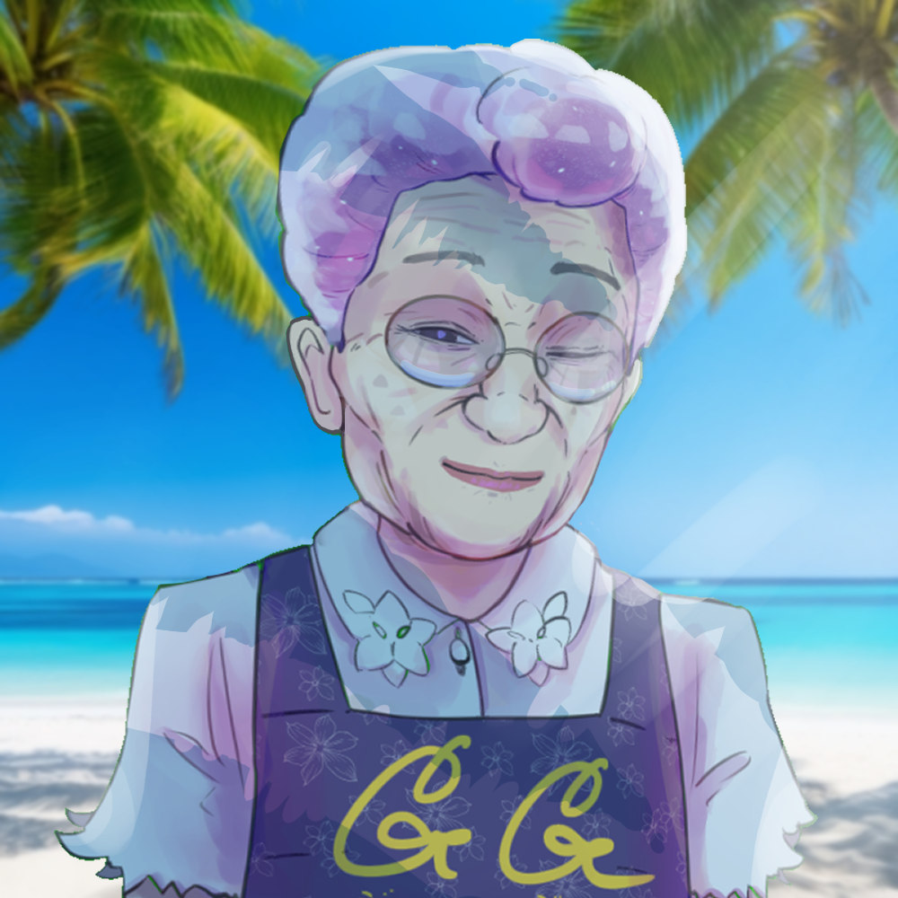
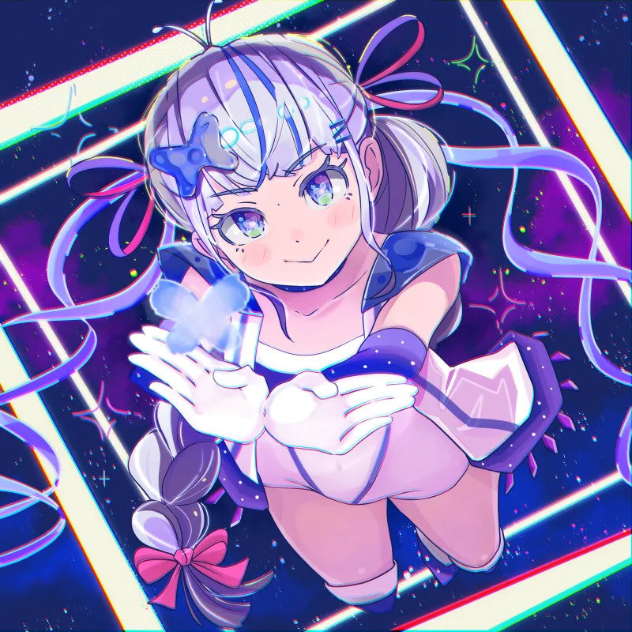
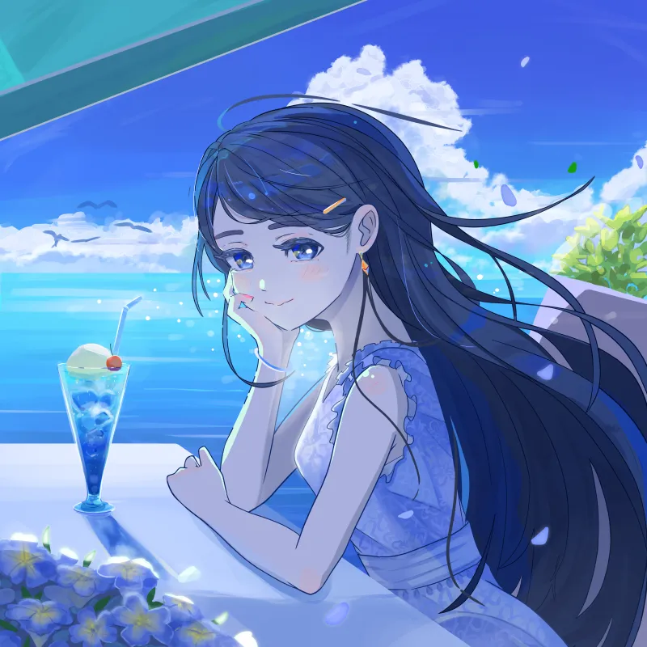

出展情報：デザインフェスタ63

このたびデザフェスにて新ブランド「ぽちゃもん」が初出展となります！
TikTokでアニメーション展開中のぽちゃもんグッズを会場でぜひお楽しみください。
ミニゲームも遊べますので、ご来場お待ちしています。
日時:5/23(土)24(日)
場所:東京ビッグサイト西1階【F-123】
出展・新作・イベントなどのお知らせ一覧です。
このたびデザフェスにて新ブランド「ぽちゃもん」が初出展となります！
TikTokでアニメーション展開中のぽちゃもんグッズを会場でぜひお楽しみください。
ミニゲームも遊べますので、ご来場お待ちしています。
日時:5/23(土)24(日)
場所:東京ビッグサイト西1階【F-123】

FANTASIA2025に出展させていただきます！
引き続き旬の「すしだるま」グッズをお楽しみください。
ご来場お待ちしております。
日時:11/23(日)11:00～17:00
場所:科学技術館(最寄り九段下駅または竹橋駅)

このたびデザフェスに初参加させていただきます！
「すしだるま」グッズの新ネタもご用意してお待ちしております。
ぜひご来店くださいませ。
日時:11/15(土)16(日) 10:00～18:00
場所:東京ビッグサイト西館1階【F-245】

展示会に作品を展示させていただきます！
歴史や場所に思いを馳せながら様々な作品をお楽しみください。
『東海道五拾六次目』
～広重が描かなかった宿場町～
展示会場:東海道由比宿交流館
期間:9/19～10/21(月曜休館)

COMITIA153に出展します！
新鮮な「すしだるま」グッズを取り揃えてお待ちしております。
ぜひお気軽に遊びにきてください。
日時:9/7(日) 11:00～16:00
場所:東京ビッグサイト【東6 O09b】
アナログ作品の展示会に作品を展示します！
熱海市 『Article - cafe&gallery』 にて開催するアートカフェイベント
『 SEA - Sweet Exciting Art 』
2024年 10月 12日(土)〜13日(日)
12(土) 10:00 〜 18:00
13(日) 10:00 〜 17:00
（公式Xより情報引用）

8/8は「ばーばの日」
記念のブラウザゲームをこしらえました。
その名も「時女守愛のときめきサマー」
最後までラヴ・タンクを満たすと先着でドキドキNFTをゲット！
時間帯で登場するばーばが変わり、好感度によってもばーばの態度がヴァージョンアップします。
ひと夏の忘れられないアヴァンチュールをお楽しみに…

NFTコミュニティW3S(ウェス)のDiscord内に、城島のコミュニティチャンネルをオープンしました！
こちらではTwitterの発信よりも細かい情報などをお伝えしたり、交流を深めるチャンネルとなっています。
W3SのTwitterプロフィールより、Discordチャンネルにリンクできます。
ぜひ遊びにきてみなさんと交流を深めていきましょう！

新作のNFTをリストします。
『潮騒のクリームソーダ』
7/7(Fri)21:00~
0.1ETH(fixed price)
初夏を感じる爽やかな光。
空と海とクリームソーダが、あなたを青く染める。
目を閉じれば風と波の音。潮の香りがその一瞬を包み込みます。
7月8日,9日に表参道・穏田ギャラリーで行われる展示会「夏のかけら」出展作品です。
現地ではキャンバスアートの展示も行われます。
NFTコミュニティ「CNF」が、Nコレ大阪に出展します！
姉妹コミュニティW3S(ウェス)公式キャラクター「ウェスちゃん」のファンアートNFTを、イベント期間限定で無料配布します。
ウェスちゃんは、城島がキャラクターデザインをおこなったキャラクターです。
合計4名のクリエイターによるウェスちゃんNFTをゲットできますので、ぜひ公式Twitterで条件をご確認ください。
新作のNFTをリストします。
『フェイクファー』
0.1ETH(fixed price)
NFT×音楽を題材としたイベント「NON」の展示用作品として制作しました。
音楽が題材なので、影響を受けた大事なもので何か描きたいと思ったことがきっかけの作品です。
あとから振り返ったときに気付かされる、何気ない日々の大切さを表現しました。
ぜひ作品を見ていただけると嬉しいです。